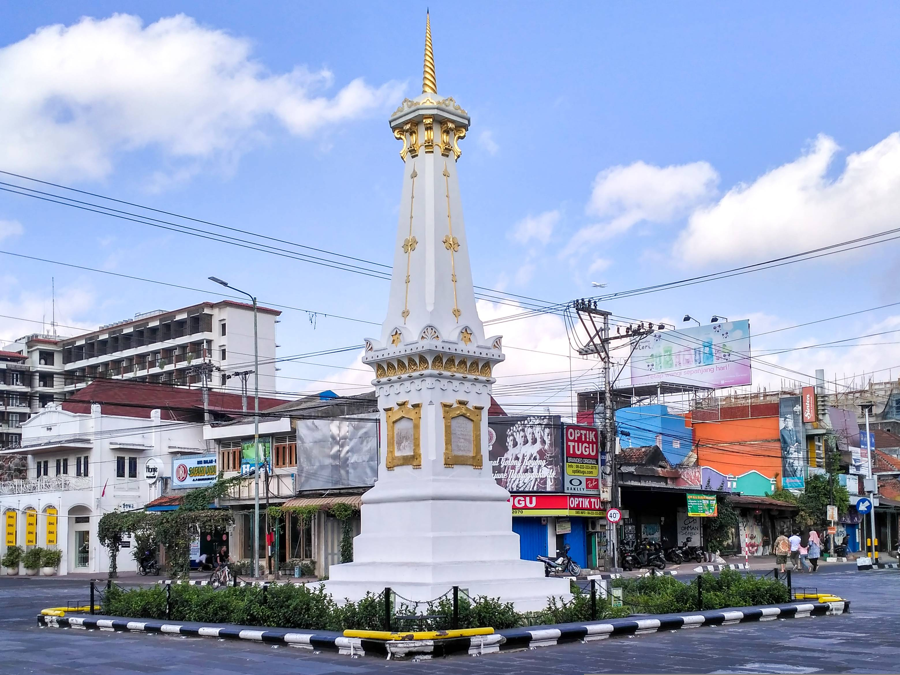

Destinasi Wisata Jogja Yang Perlu Kamu Ketahui


--------Wisata Populer--------


Icon of Yogyakarta
Tugu Yogyakarta adalah sebuah tugu atau monumen yang sering dipakai sebagai simbl atau lambang dari kota Yogyakarta. Tugu ini dibangun oleh pemerintah Belanda setelah tugu sebelumnya runtuh akibat gempa yang terjadi waktu itu.
Alamat: Gowongan, Jetis, Yogyakarta City, Special Region of Yogyakarta 55233
Jam buka: Open 24 hours
Provinsi: Daerah Istimewa Yogyakarta
Tahun dibangun: 1775
Lokasi: Yogyakarta, Indonesia
Harga tiket masuk: FREE
Harga parkir: Rp.1000 (motor)
Rp.2000 (mobil)